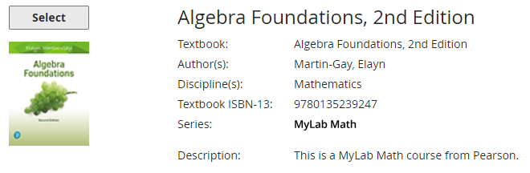
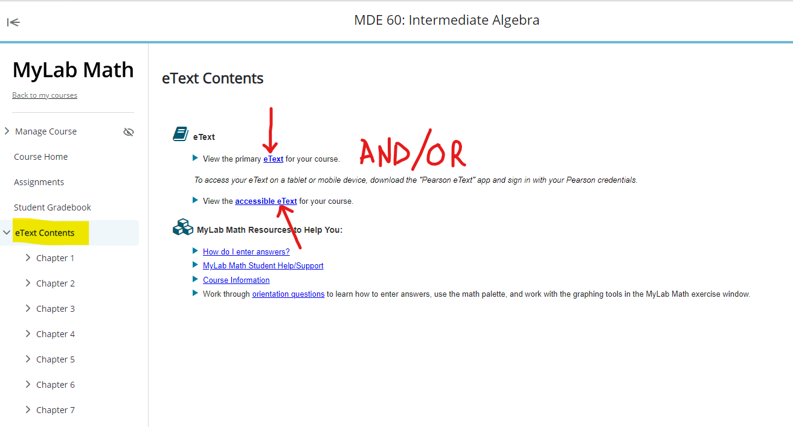
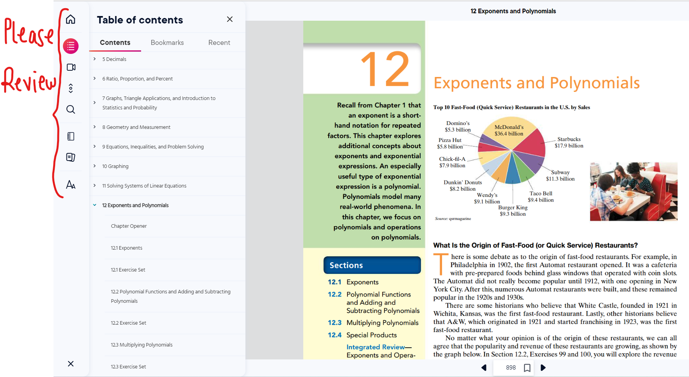
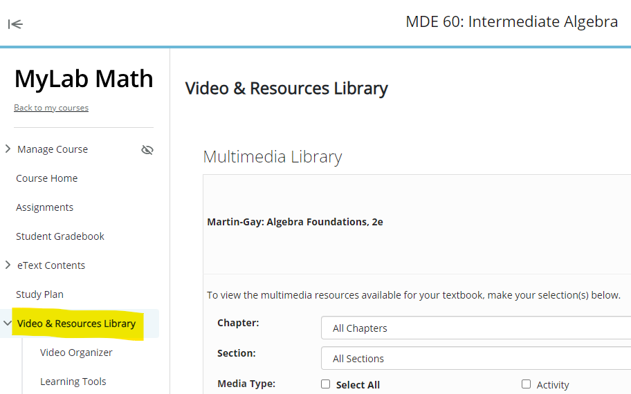
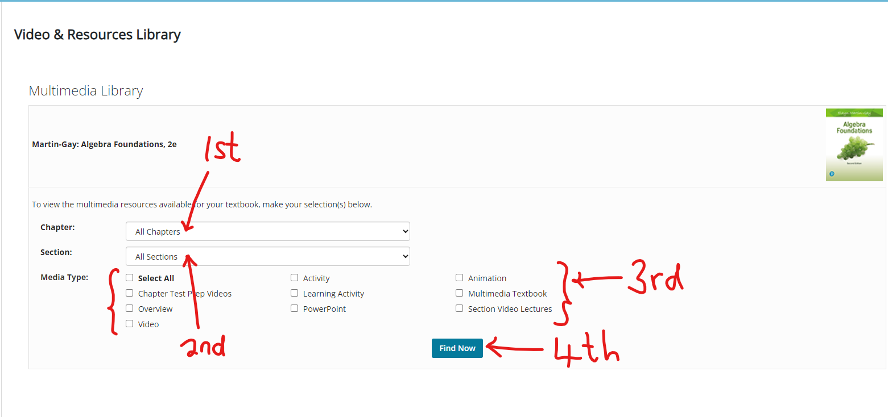
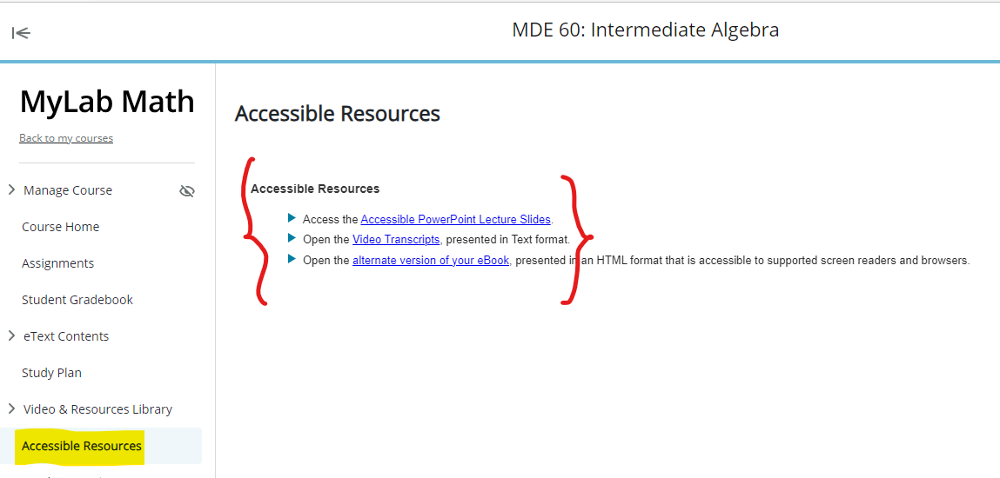

Samuel Dominic Chukwuemeka (SamDom For Peace) B.Eng., A.A.T, M.Ed., M.S
| College System: | Virginia Community College System (VCCS) |
| College: | Blue Ridge Community College (BRCC) |
| Department: | Mathematics |
| Course: | MDE 60: Intermediate Algebra |
| Course Description: | https://courses.vccs.edu/courses/MDE60-IntermediateAlgebra |
| Detailed Outline: | https://courses.vccs.edu/courses/MDE60-IntermediateAlgebra/detail |
(1.) This is my personal quote: The Joy of a Teacher is the Success of his Students.
–
Samuel Dominic Chukwuemeka
I want you to succeed in this class and I want to be part of your success.
(2.) You will do a lot of work on your own in this course.
(Did I just scare you? I hope not. I am just being honest with you. The good thing is that I am here
to help you. But, you will do most of the work on your own.)
I shall introduce the topic to you, then teach some concepts of the topic.
I shall provide the resources for you to read/study/review: MLM Resources
and Pacing Guides.
It is highly recommended (but not required) that you review these resources prior to class and ask
questions that you do not understand (Flipped Classroom Learning).
Class attendance is highly recommeded. Attendance is taken during every class session. However, no point
is given for attendance; neither is any point deducted for non-attendance.
In other words, Mr. C understands that you may have other priorities besides school and that some
circumstances may demand your absence from class.
Be it as it may, please note that you are completely (not partially) responsible for anything
that was covered during your absence.
So, I suggest you make friends with your colleagues who attend class regularly to take their notes and
ask them what was covered during the class session that you missed.
During each class session, I shall teach some concepts of the topic(s) as noted in the Pacing
Guides.
But you will complete the learning on your own by working through a lot of assignment questions and
practicing until
you master them.
Your goal would be to make 100% on each topic (recommended, not required).
You are not alone, though. I am here to guide your learning and help you master the concepts.
Please ask questions on any concept/topic that you do not understand.
It is important that you ask questions in the class, as that question may also be beneficial to some of
your colleagues.
You are always welcome to come and see me during Office Hours and ask questions also.
If my Office Hours do not suit your schedule and you need to have a live session with me, please send an
email to me with your available days and times. I shall check my schedule and respond.
How did I set up this course to help you succeed?
(3.) Assessments: There is only one assessment for this course:
MyLab Math (MLM) also known as MyMath Lab assignments: This is 100% of your final grade.
(i.) Every assignment is open for you from the first day of class. There are many assignments for you to
do. But you get the credit for it.
A 70% is requied to pass the course. I do not pick and choose questions when assigning the sections
because I want you to be exposed to the various types/forms of questions for each
section. It is a lot of work. But you get the credit for it if you complete it successfully. It
will be good if you make a 100% on all of them, but you must not.
It depends on the grade you want for the course. Please review the Grade calculator for examples.
(ii.) Each section has two due dates: initial due date and final due date. It is not timed. However, it
has due dates.
(iii.) If there is any section you were unable to complete by the first due date, you may continue to
work on it, and try to complete it by the final due date without any penalty.
(iv.) If there is any section you did not attempt by the first due date, you will earn a zero score in
the Canvas gradebook when grades are updated. When you
attempt that section and earn a grade, that grade will be updated the next time grades are updated.
(v.) Grades for the MLM assignments are updated in the Canvas gradebook biweekly (every other week).
(vi.) Many questions on an MLM assignment have learning aids. The learning aids include: Help Me
Solve This and View an Example among others.
You are encouraged to use these learning aids.
The learning aids typically uses one approach/method to solve the question. If you do not understand
that approach/method, that is where I come in.
Please contact me with the question/question ID and I'll use another approach to explain the question so
you may understand.
Further, the solved examples on my websites (as listed in the Pacing Guides) contain some of the
questions on your MLM assignments.
(vi.) There are unlimited attempts for your MLM assignments.
If you do a question about three times and get it incorrect, please click on Similar Question or
Try again button usually at the bottom right corner.
If you get a similar question correct, you will get the credit for that question.
Please use only a computer (laptop or desktop, no tablets, no smartphones) with internet access.
(viii.) The final due date for all MLM assignments is the last day of class, or sometimes the weekend of
the week of the last day of class.
Please review the course syllabus for the exact date.
(ix.) After the final due date, please do not ask for an extension.
(ix.) All MLM assignments are done in the Pearson learning management system via the Canvas learning
management system.
(4.) I believe in giving my students a lot of opportunities to succeed: unlimited attempts for the MLM
assignments, including my availability and willingness to answer your questions.
In that regard, I do not believe in bonus points. I do not believe in extra credit.
Please do not ask for bonus points.
Please do not ask for extra credit.
Please do not ask for the grading to be curved. (normal distribution curve).
Please ask me questions instead.
What should you do?
What are some tips for succeeding in the class?
(5.) You control 100% of your final grade.
(a.) Let us discuss how you can make a 100% on the MLM assignments:
The MLM assignments consists of 31 main sections: 2938 questions.
You have about 118 days (including Thanksgiving week) and about 111 days (excluding Thanksgiving week)
to complete 2938 questions.
Please note that some questions have children (sub-questions).
So, if we count each question and sub-question, the number is higher.
But you have about 118 days to complete all the questions.
For 118 days: (Thanksgiving week is included)
$\dfrac{2938}{118} = 24.89830508 \approx 25$ (rounded up) questions per day.
If you complete 25 questions (including any sub-questions) per day, you will complete all MLM
assignments in about 118 days.
If you complete 30 questions (including any sub-questions) per day, you will complete all MLM
assignments in about 98 days.
For 111 days: (Thanksgiving week is excluded; however, you are highly recommended to practice/solve Math
questions daily to master the concepts/topics)
$\dfrac{2938}{111} = 26.46846847 \approx 27$ (rounded up) questions per day.
If you complete 27 questions (including any sub-questions) per day, you will complete all MLM
assignments in 109 days.
If you complete 30 questions (including any sub-questions) per day, you will complete all MLM
assignments in about 98 days.
It is doable. It just requires your time and effort.
There is no graded work due during Thanksgiving week. Hence, you do not see any work in
Week 14 of the Pacing Guide
However, it is important you practice Math daily to master it.
(b.) Please make sure you do all these assignments yourself.
(i.) Use the Learning Aids provided for you by Pearson MLM.
(ii.) Use my websites (especially the Solved Examples ... as noted in the Pacing Guides). I have
solved, and I am still solving your MLM questions on my websites. My
explanations of the solutions are clear, as testified by some of my students. Please let me know
otherwise.
(iii.) Do not use online calculators, even my own online calculators. Mr. C is even asking you not to
use his own online calculators. Here's the reason: if a calculator solves
the question for you, did you really learn to solve the question? You know these websites that
have online calculators. I do not think that you learn the topics/concepts
if you use such online calculators.
(iv.) Do not use the mobile Mathematics apps that will solve the questions for you. You know these
mobile apps including the one where you take the picture of the question with your
smartphone and it gives the answer. I do not think you learn the topics/concepts if you use such mobile
apps.
This course is a direct integration of the Pearson eText including resources and assignments among
others.
You have access to the MyLab Math (MLM) assignments.
You have access to the eText. This includes an accessible eText (for students who require
accommodation).
So, you have an electronic textbook. Hence, a physical/hard copy textbook is not required.






Dear Students,
Greetings to you.
As you evaluate me and my teaching style on the Canvas course, I ask that you consider these questions
in
addition to the survey questions.
Thank you for giving me the opportunity to teach the course.
It was nice working with you.
I wish you the best in your academic profession.
Thank you!
Samuel Dominic Chukwuemeka (SamDom For Peace)
B.Eng., A.A.T, M.Ed., M.S
Working together for success
Grading Method: Grading Method
Classroom/Learning Environment: Canvas course management system.
Course Assessments: MyLab Math (MLM) assignments, Discussion Board (DB) assessments, and
Project-based Learning assessment (Piecewise Function Project)
Direct forms of communication: Office Hours/Live Sessions, Comments to your DB Posts and/or
Responses, individualized Zoom sessions, Emails, and Google Voice text messages and calls.
Indirect forms of communication: Course announcements, Websites (Notes, Videos, and Resources
among
others).
Course Contents
Please review the VCCS Course Description and
the VCCS
Detailed Outline
Those are the basic topics that VCCS/BRCC require that I teach.
(1.) Did I cover those topics: teach the topics and/or provide resources for the topics?
Resources include your textbooks (eText and resources), my websites (including notes/videos/resources)
(2.) Did I cover other necessary topics that is relevant for you to succeed in your profession?
(3.) Did the assessments demonstrate the application of the topics?
(4.) Did the contents and assessments demonstrate important skills such as critical thinking, use of
technology,
creativity, and organization among others?
Teaching and Learning
(5.) Did you acquire any knowledge from me?
(6.) Did you acquire sufficient knowledge, or more than sufficient knowledge from me?
(7.) Did you acquire any knowledge from any of your colleagues because of how the course was set up?
(8.) Did you acquire sufficient knowledge, or more than sufficient knowledge from any of your colleagues
because of the way the course was set up?
(9.) Did I provide effective feedback on the draft submissions and the main submissions of your
project?
Did you acquire any knowledge based on my feedback?
(10.) Did I provide comments/effective feedback for your DB Post and/or Response?
Did you acquire any knowledge based on the feedback?
(11.) Did you get any feedback for any of the questions on your MLM assignments?
Did you acquire any knowledge based on that feedback?
(12.) Did any of the feedback help you improve in any way?
In other words, was the feedback useful to you in any way?
(13.) Did you have enough support to ensure the successful completion of the course?
Were your questions answered?
Did you have enough resources/learning aids?
(14.) Did I provide a safe and conducive environment for learning?
(15.) Was the Grading Method fair?
Pacing Guide
(16.) Were you given enough time to learn the contents?
(17.) Were you given enough time to complete the assessments?
Consider the fact that you were given two due dates for the MLM assignments and the Project; and
that
there
was no penalty for late work after the first due date.
Professionalism
(18.) In all our communication (both direct and indirect), did I act professionally?
(19.) In all our communication (both direct and indirect), did I use a respectful tone?
(20.) What do you like or dislike about our communication?
Personality
(21.) Based on your experience with me (taking the course with me and communicating with me among
others),
how
would you describe my person?
Do I give a lot of work?
Do I give a lot of explanations?
Do I have a lot of expectations for my students?
Do I really want you to learn?
Do I really want you to succeed?
Do I ask a lot of questions?
Do I answer questions with questions sometimes?
During those times, please note that it is a teaching technique.
It is never meant to disrespect you. I do not disrespect my students. I respect them.
It is a technique to guide you to review directions/concepts, and explain what you do not
understand.
Would you take another course with me? Why or why not?
Did your views/perception about me affect you in completing this course successfully or unsuccessfully?